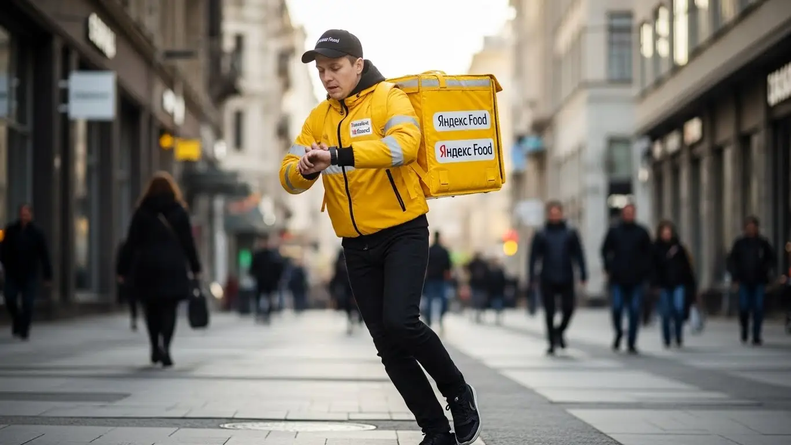
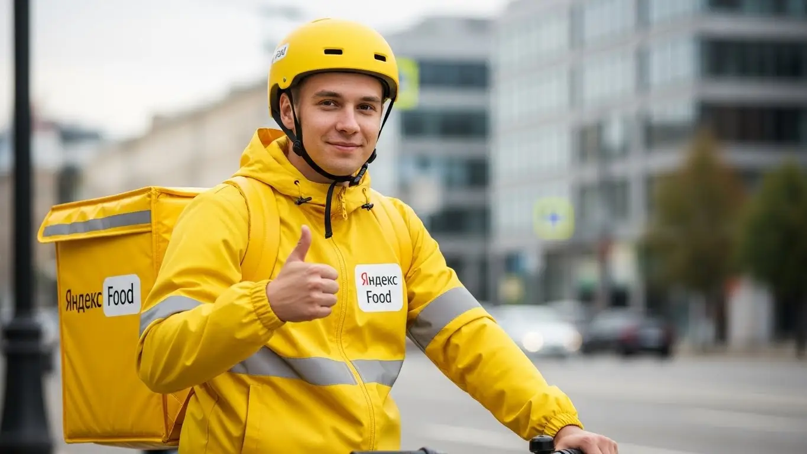
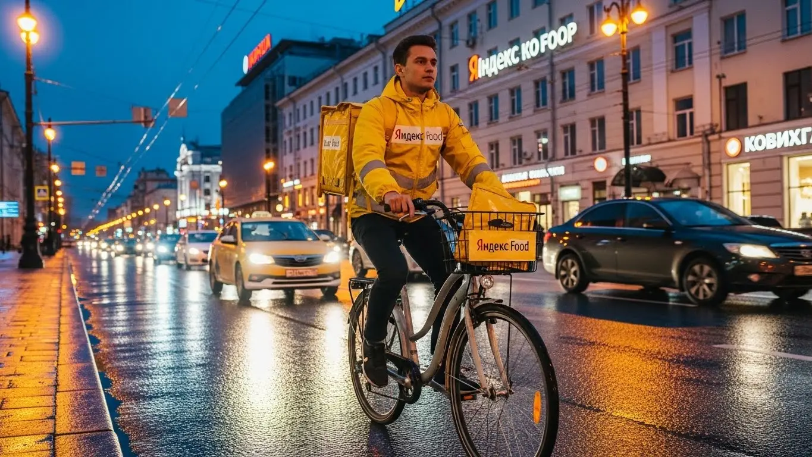

Работа курьером Яндекс Еды в Мурманске 2025-2026: обзор дохода

- Работа курьером Яндекс Еды в Мурманске: для кого эта вакансия и что вы получите
- Сколько вы будете зарабатывать курьером в Мурманске: калькулятор дохода и разбор выплат
- Реальный заработок курьера в Мурманске: смены и месячный доход
- График работы и форматы занятости
- Требования к кандидату и документы
- Самозанятость, налоги и юридическая чистота
- Пошаговое оформление и первый выход на линию в Мурманске
- Пешком, на вело или на авто: что выгоднее в Мурманске
- Районы, маршруты и «топовые» зоны заказов в Мурманске
- Безопасность, страховка, штрафы и оплата простоя
- Плюсы и возможные минусы работы курьером в Мурманске
- Реальные истории и отзывы курьеров из Мурманска
- Ответы на главные вопросы о работе курьером Яндекс Еды в Мурманске
- Короткие ответы на главные вопросы
- Что в итоге и как начать?
Все города
Здорово, земляк! Ищешь подработку в Мурманске и всё чаще поглядываешь в сторону ребят с желтыми сумками? Мысль здравая, но в голове наверняка каша: а сколько реально выходит чистыми? Не убью ли я свою «ласточку» на наших сопках и вечно разбитых дворах? И как не встать намертво в пробке на Кольском проспекте в час пик, когда таймер заказа уже тикает? Я здесь, чтобы рассказать тебе не про розовые мечты из рекламы, а про реальную работу курьером Яндекс Еды в Мурманске.
Поверь, без понимания местной «кухни» ты рискуешь сдуться в первый же месяц, решив, что это «не твое». Потому что твой итоговый заработок — это не просто цена заказа. Это минус бензин или проезд, минус налог самозанятого, минус амортизация. Это твой рейтинг, который решает, дадут ли тебе жирный заказ из центра или отправят за копейки в Росту. Большинство новичков здесь, в Мурманске, наступают на одни и те же грабли: гоняют впустую между Ленинским и Первомайским округами, не зная, где и когда «горит» спрос, и теряют деньги. Чтобы лучше понять, подходит ли тебе работа курьером Яндекс Еда в Мурманске, загляни на страницу с калькулятором дохода и формой заявки, там собраны все актуальные условия.
В этом гиде мы честно разберём всё по косточкам. Мы посчитаем, сколько на самом деле можно заработать пешком, на велосипеде или на авто с учетом мурманских реалий. Я покажу на карте самые «хлебные» районы и время, когда заказов больше всего. Выясним, как полярная ночь и гололед влияют на доход и что делать, чтобы не сидеть без дела. И, конечно, пройдемся по штрафам — за что реально наказывают и как этого избежать.
Меня зовут Алексей. Я сам не один год откатал с коробом за спиной, а сейчас у меня свой небольшой таксопарк-партнер. Я видел эту систему со всех сторон и знаю, где лежат деньги, а где — проблемы. Так что забудь про рекламные буклеты. Дальше — только мясо, только реальный опыт и советы, которые помогут тебе сразу начать зарабатывать, а не учиться на своих ошибках. Ну что, погнали? Сейчас всё разложу по полочкам.
А чтобы тебе было проще сориентироваться, вот краткий гид по ключевым темам статьи.
Что ты точно узнаешь из этого разбора
В этой статье ты ТОЧНО узнаешь:
- Сколько реально можно заработать в Мурманске за смену пешком или на авто, и как погода может удвоить твой доход?
- В каких районах Мурманска (от центра до Первомайки) больше всего заказов и как не кататься впустую?
- Что выгоднее для Мурманска с его сопками и зимой — работать пешком, на велосипеде или на своей машине?
- За что на самом деле снижают рейтинг, есть ли штрафы и как работает бесплатная страховка на смене?
- Насколько сложно начать работать: какие документы нужны и как быстро можно выйти на первую смену?
А если тебе некогда читать всю статью — переходи сразу к заключению, где ты найдёшь короткие ответы на все эти вопросы и указания, в каких разделах искать подробности.
И сразу наглядная инфографика, чтобы ты мог прикинуть основные цифры.
Работа курьером в Мурманске: ключевые цифры
Доход в час
350–550 ₽
В часы высокого спроса, с учетом бонусов и коэффициентов.
Заработок за смену
2800–4200 ₽
Средний доход за активный 8-часовой слот в городе.
Гибкий график
От 4 часов
Вы сами выбираете длительность и время смен в приложении.
Особенности города
+25% к доходу
Повышающие к-ты за погоду, рельеф и высокий спрос.
Работа курьером Яндекс Еды в Мурманске: для кого эта вакансия и что вы получите
Кому подойдёт эта работа в Мурманске
Скажу прямо: эта работа в доставке подходит многим, если есть голова на плечах и желание двигаться. В первую очередь, это отличная подработка для студентов. График легко подстроить под лекции, чтобы выходить на пару часов после учёбы и иметь свои деньги на карманные расходы. Никакого специального опыта не требуется — всему научат, главное, чтобы был смартфон и ты ориентировался в городе.
Эта вакансия — идеальная подработка и для тех, у кого уже есть основная работа. Например, если у тебя график два через два, в свободные дни можно выйти на 4–6 часов, развезти заказы и сразу получить живые деньги. Или после смены в офисе — покататься пару часов в вечерний пик.
Для водителей на личном авто это вообще возможность превратить машину из пассива в актив. Став курьером на автомобиле, ты сможешь брать больше заказов и работать в любую погоду. Если тебе важен свободный график и быстрые выплаты, а не сидение в офисе с 9 до 6, то это твой вариант.
Главные преимущества для жителей районов Октябрьский, Ленинский, Первомайский
Главный плюс, который многие недооценивают, — возможность работать прямо у себя в районе. Тебе не нужно тратить час-полтора на дорогу до «офиса». Живёшь, скажем, в Первомайском районе — открываешь приложение «Яндекс Про», выбираешь свою зону и начинаешь выполнять заказы. Задания от Яндекс Еды из местных кафе и магазинов будут приходить тебе в первую очередь.
То же самое касается жителей Ленинского или Октябрьского округов. Везде есть свои точки притяжения: торговые центры, фудкорты, жилые массивы. Система в Яндекс Про подбирает заказы так, чтобы минимизировать холостой пробег. Это экономит и время, и силы, и деньги, если ты курьер на автомобиле. Ты работаешь на знакомых улицах, знаешь все дворы и короткие пути, что даёт тебе явное преимущество.
Краткое обещание по доходу и условиям
Если говорить о деньгах, то в Мурманске при частичной занятости (3–4 часа в день) вполне реально заработать 1500–2500 рублей за смену. Если же рассматривать это как основную работу и выходить на полные смены по 8–10 часов, то доход может доходить до 4000–5000 рублей в день. В месяц при полной занятости зарплата активных курьеров составляет в среднем 70 000 – 95 000 рублей. И это не через месяц, а сразу: сервис предлагает ежедневные выплаты, деньги приходят на карту, ждать не нужно.
Ключевые условия работы просты: свободный график, который ты сам составляешь в приложении, и возможность начать без опыта. Для легального получения дохода нужно оформить самозанятость — это делается онлайн за 10 минут. Тебе предоставят фирменную термосумку (термокороб) и всё необходимое обучение. Твоя задача — просто вовремя и аккуратно доставлять заказы, а всё остальное за тебя делает технология.
Сколько вы будете зарабатывать курьером в Мурманске: калькулятор дохода и разбор выплат
Из чего складывается доход курьера
Твой заработок — это не просто фиксированная ставка, а сумма нескольких составляющих. Во-первых, базовая оплата за каждый выполненный заказ. Во-вторых, доплата за расстояние — чем дальше везти, тем больше денег. В-третьих, в часы пик (обед, ужин, выходные) и в плохую погоду, что для Мурманска особенно актуально, включаются повышающие коэффициенты. Они могут умножить стоимость заказа в 1.5, а то и в 2 раза.
Кроме этого, есть бонусы за выполнение определённого количества заказов в день или неделю. Не стоит забывать и про чаевые — они полностью твои, сервис не берёт с них комиссию. И два важных момента, которые есть не везде: оплата простоя, если ты на смене, а заказов временно нет, и компенсация проезда на общественном транспорте для пеших курьеров на дальних маршрутах. Всё это суммируется и составляет твой итоговый доход.
Как пользоваться калькулятором дохода
На странице есть специальный калькулятор, который поможет прикинуть твой возможный заработок. Пользоваться им просто. Сначала выбери свой тип доставки: пеший курьер, курьер на велосипеде или на личном автомобиле. Затем укажи, сколько часов в день и сколько дней в неделю ты планируешь выходить на линию.
Прикинь свой примерный доход в Мурманске
8 часов
5 дней
Твой примерный доход в месяц:
*Расчёт на основе средней ставки 450 ₽/час в Мурманске. Реальный доход зависит от спроса, бонусов и вашего графика.
Кстати, чтобы увидеть более точные цифры для Мурманска и сразу подать заявку, загляни на страницу про работу курьером Яндекс Еда в твоём городе — там всегда актуальные условия, FAQ и форма для анкеты.
После того как ты введёшь эти данные, система покажет примерный диапазон твоего дохода за день и за месяц. Конечно, это прогноз, основанный на средних показателях по Мурманску. Твой реальный заработок будет зависеть от скорости, выбранных районов и времени работы, но калькулятор даёт хорошее представление о том, на какие цифры можно ориентироваться.
Примеры расчёта для пешего, вело- и автокурьера в Мурманске
Чтобы было понятнее, разберём на конкретных примерах для Мурманска.
- Пеший курьер. Студент выходит на 4-часовую смену вечером в центре, в районе проспекта Ленина. Здесь много кафе, спрос стабильный. За счёт коротких расстояний он успевает сделать 8–10 заказов. С учётом вечернего коэффициента его заработок за смену составит примерно 1800–2200 рублей.
- Велокурьер. Парень работает в выходной день 6 часов, курсируя между спальными кварталами Первомайского и Октябрьского районов. Заказы в основном из магазинов и пиццерий. За счёт скорости он выполняет 12–15 заказов на средние дистанции. Его доход за такой день может составить 2800–3500 рублей.
- Водитель-курьер на своем авто. Мужчина выходит на полную 8-часовую смену в субботу, когда идёт снег. Он берёт заказы по всему городу, включая дальние доставки. За счёт высокого спроса, повышенных коэффициентов из-за погоды и возможности выполнять дорогие «длинные» заказы, его заработок за смену может превысить 5000–6000 рублей.
Реальный заработок курьера в Мурманске: смены и месячный доход
Перейдём к самому главному — к деньгам. Сколько на самом деле зарабатывает курьер в Мурманске, работая в сервисах вроде Яндекс Еды? Цифры в рекламе — это одно, а реальность на линии — совсем другое. Я не буду обещать золотых гор, а просто разложу по полочкам, из чего складывается твой доход и на что можно рассчитывать, если работать с головой.
Заработок — это не фиксированная ставка. Он зависит от твоего транспорта, количества часов на линии, времени суток и, конечно, от мурманской погоды, которая тут главный режиссёр. Кто-то выходит на пару часов после основной работы и кладёт в карман 15–20 тысяч в месяц дополнительно. А кто-то впахивает на полную и делает 80–100 тысяч и больше, особенно на своей машине. Главное — понять, как работает система, и использовать её в свою пользу.
Диапазон дохода для подработки и полной занятости
Если говорить о конкретных цифрах для Мурманска, то вилка дохода сильно зависит от формата и условий работы. Не стоит ждать одинаковых денег, работая пешком 2 часа в день и на авто по 10 часов.
Подработка (2–4 часа в день, 3–5 дней в неделю):
- Пеший курьер: Идеально для центра, в районе проспекта Ленина или около ТРЦ «Мурманск Молл». За вечернюю смену в 3–4 часа можно сделать 800–1500 рублей. В месяц выходит примерно 15 000 – 25 000 рублей.
- Велокурьер: Вариант для крепких ребят и только в короткий летний сезон. Из-за сопок и долгой зимы это не самый популярный выбор в Мурманске. Но летом в хорошую погоду можно зарабатывать чуть больше пешего, около 1000–1800 рублей за смену.
- Автокурьер: Самый выгодный вариант для подработки. За 3–4 часа в вечерний пик или в выходной можно заработать 1500–2500 рублей «грязными» (до вычета бензина). Это отличный способ получить 25 000 – 40 000 рублей к основной зарплате.
Полная занятость (8–10 часов в день, 5–6 дней в неделю):
- Пеший курьер: Физически тяжело, но реально. Работая в плотной застройке Октябрьского или Ленинского округов, можно рассчитывать на 45 000 – 60 000 рублей в месяц.
- Автокурьер: Это уже серьёзная работа. Стабильный доход здесь начинается от 70 000 и доходит до 120 000 рублей в месяц, особенно если не лениться и работать в часы пик и плохую погоду. После вычета расходов на топливо и обслуживание машины чистыми остаётся очень достойная сумма.
Сравнение дохода в Мурманске по форматам занятости
| Тип курьера | Подработка (2-4 часа/день), ₽/мес. | Полная занятость (8-10 часов/день), ₽/мес. |
|---|---|---|
| Пеший | 15 000 – 25 000 | 45 000 – 60 000 |
| Вело (сезонно) | 18 000 – 28 000 | Нестабильно, не рекомендуется |
| На авто | 25 000 – 40 000 | 70 000 – 120 000 |
Например, мой знакомый, водитель-курьер, в прошлом месяце целенаправленно работал в снегопады. За одну субботу, когда город стоял, а коэффициенты были максимальными, он за 9 часов сделал почти 7000 рублей. В обычный же день его заработок составляет 3500–4500 рублей за то же время. Погода в Мурманске — твой главный союзник, если ты на машине.
В итоге, твой реальный заработок напрямую зависит от вложенных усилий и выбранного транспорта. Для Мурманска автомобиль — это ключ к максимальному доходу, но и пеший курьер в центре города может стабильно зарабатывать, если правильно выбирает время и место.
Как район, время суток и погода влияют на доход
Запомни три кита высокого заработка курьера: место, время и погода. В Мурманске это ощущается особенно остро. Нельзя просто выйти на линию в два часа дня в спальном районе в солнечную погоду и ждать потока заказов. Деньги делаются там, где есть спрос, а спрос очень предсказуем.
- Район. Больше всего заказов, конечно, в центре: проспект Ленина, улицы Воровского, Карла Маркса. Здесь сосредоточены офисы, кафе и рестораны. В обеденное время (с 12:00 до 15:00) и вечером (с 18:00 до 22:00) тут всегда «фиолетовые» зоны — зоны с повышенным коэффициентом, которые хорошо видны на карте в приложении Яндекс Про. Но не стоит забывать про крупные спальные районы, такие как Первомайский округ. Вечером и в выходные оттуда идёт вал заказов из продуктовых магазинов и пиццерий.
- Время суток. Пиковые часы — это обед и ужин. Плюс все выходные и праздничные дни. В это время заказов больше, а доплаты выше. Работать с 7 до 10 утра или с 15 до 17 часов дня менее выгодно — это время для отдыха или личных дел.
- Погода. Для Мурманска это главный козырь. Снег, метель, сильный дождь или мороз — твои лучшие друзья. Большинство курьеров предпочитают отсидеться дома, а количество заказов резко возрастает. Система поднимает коэффициенты до х2, а то и х3. Клиенты в такую погоду охотнее оставляют чаевые, потому что ценят твой труд. Если ты на машине и не боишься трудностей, один такой день может принести тебе доход как за два-три обычных.
Советы по увеличению заработка от опытных курьеров
Чтобы зарабатывать больше, не обязательно работать дольше. Нужно работать умнее. Вот несколько проверенных советов, которые помогут тебе выжимать максимум из каждой смены в Мурманске.
Всегда планируй свои смены (слоты) заранее через приложение «Яндекс Про». Выбирай вечерние часы, выходные и праздники — это гарантированно принесёт больше денег. Не игнорируй зоны с высоким спросом, даже если они чуть дальше от твоего дома. Иногда лучше потратить 15 минут на дорогу до «горячей» зоны, чем час ждать заказа в «тихой».
Будь гибким. Если ты на машине, не зацикливайся только на заказах из «Еды». Подключай тариф «Доставка», чтобы возить посылки и документы в периоды затишья по ресторанным заказам. Это помогает избежать простоя и поддерживать стабильный поток денег в течение всего дня. Пешему курьеру стоит держаться компактных центральных районов, чтобы не тратить время на долгие переходы.
Наконец, следи за своим рейтингом и активностью в приложении. Высокий рейтинг даёт приоритет в распределении заказов. Это значит, что тебе будут предлагать самые выгодные и удобные варианты в первую очередь. Чтобы его поддерживать, просто будь вежлив с клиентами, опрятен, а твоя термосумка — чистой. Старайся не опаздывать. Это простые правила, которые напрямую влияют на твой кошелёк.
График работы и форматы занятости
Одно из главных преимуществ этой работы — гибкость. Ты сам себе начальник и сам решаешь, когда и сколько работать. Это не просто красивые слова из рекламы, а реальная возможность встроить доставки в свою жизнь, а не наоборот. Хочешь — выходи на пару часов вечером, чтобы подзаработать на новую приставку. Хочешь — работай полную неделю и обеспечивай семью.
В Мурманске, где у многих работа связана с морем или вахтами, такой свободный график особенно ценен. Можно работать в периоды между рейсами или просто когда нужны быстрые деньги. Главное — понимать, какие форматы занятости существуют и какой из них подходит именно тебе. От этого зависит не только твой доход, но и то, насколько комфортно тебе будет работать.

Подработка после учёбы или основной работы
Совмещать доставки с другой деятельностью проще простого. Это идеальный вариант для студентов и тех, у кого уже есть основная работа со стабильным графиком. Тебе не нужно увольняться или брать отпуск, чтобы начать.
- Пример 1: Студент МАГУ. Парень учится на дневном. Живёт в центре. Четыре раза в неделю после пар, примерно с 18:00 до 22:00, он выходит на линию как пеший курьер. В субботу берёт длинный слот на 6–8 часов. За неделю у него набегает около 20–25 рабочих часов. Это приносит ему 6 000 – 8 000 рублей в неделю, или около 25 000 – 30 000 рублей в месяц. Деньги идут на оплату съёмной комнаты и личные расходы, он не зависит от родителей.
- Пример 2: Офисный работник. Мужчина работает в офисе с 9 до 18. У него есть своя машина. Чтобы быстрее закрыть кредит, он три-четыре раза в неделю после работы выходит на линию на 3 часа, а также работает почти всю субботу. Он выбирает свой Первомайский район, где много заказов из гипермаркетов. Такая подработка приносит ему дополнительно 35 000 – 45 000 рублей в месяц.
Главный плюс подработки — ты выходишь на линию в самое выгодное время, в вечерние пики и выходные, когда и заказов много, и коэффициенты высокие. Это позволяет не тратить время на утреннее и дневное затишье, а сразу начинать зарабатывать.
Полная занятость: как выглядит типичный день курьера
Работа на полную ставку — это уже полноценный рабочий процесс, который требует дисциплины и планирования. Вот как может выглядеть обычный день автокурьера в Мурманске, который сделал доставки своей основной профессией.
День обычно начинается не рано, около 10–11 утра. Сначала курьер смотрит на карту спроса в «Яндекс Про», чтобы понять, где лучше стартовать. Часто это спальные районы, откуда идут заказы на поздний завтрак или ранний обед.
С 12:00 до 15:00 — первый пик. В это время лучше переместиться ближе к центру, к деловым кварталам и офисам. Заказы идут один за другим, времени на перерыв почти нет.
Примерно с 15:00 до 17:00 наступает затишье по еде. В это время можно либо сделать перерыв на обед и отдых, либо переключиться на заказы «Доставки» — возить посылки, документы, товары из магазинов.
Второй пик начинается около 18:00 и длится до 21:00–22:00. Это самое прибыльное время. Заказы идут со всего города, коэффициенты максимальные. После 22:00 спрос падает, и можно либо завершать смену, либо выполнять редкие ночные заказы, если есть силы.
Как планировать слоты и выходы через приложение «Яндекс Про»
Твой главный инструмент — это приложение «Яндекс Про». Именно через него ты управляешь своим графиком. Есть два основных режима: свободный выход и плановые слоты. Свободный выход — это когда ты просто нажимаешь кнопку «На линию» в любой момент. Удобно, но в часы низкого спроса можно просидеть без дела.
Плановые слоты — это когда ты заранее бронируешь время и район, в котором будешь работать. Например, с 18:00 до 22:00 в Октябрьском округе. Плюсы очевидны: сервис видит, что ты выйдешь, и может гарантировать тебе минимальный доход за это время, даже если заказов будет мало. Кроме того, курьеры на слотах часто получают приоритет при распределении заказов.
Критически важно начинать плановый слот вовремя. Опоздание на 10–15 минут может снизить твой показатель активности, а это напрямую влияет на количество и качество предлагаемых заказов. Система ценит пунктуальность и надёжность. Поэтому, если забронировал слот, будь добр появиться в выбранной зоне за пару минут до начала. Это простое правило поможет тебе поддерживать высокий рейтинг и стабильно зарабатывать.
Один новичок поначалу работал только в свободном режиме, выходил когда придётся. Зарабатывал копейки и жаловался на отсутствие заказов. Я ему посоветовал попробовать забронировать несколько вечерних слотов в центре на неделю вперёд. Его доход за то же количество часов вырос почти вдвое, потому что он стал получать заказы стабильно и с хорошими коэффициентами.
Грамотное планирование через «Яндекс Про» — это не бюрократия, а инструмент для увеличения твоего дохода. Используй слоты, чтобы обеспечить себе стабильный поток заказов, и выходи на свободную линию, когда видишь на карте внезапный всплеск спроса. Комбинируй эти подходы, и твой график будет и гибким, и прибыльным.
Требования к кандидату и документы
Многие думают, что для старта в доставке нужна кипа бумаг и особые навыки. На деле всё гораздо проще, и большинство барьеров — просто мифы. Давай разберёмся, какие условия и требования действительно важны, чтобы начать работать курьером в Мурманске.
Возраст, гражданство и базовые условия
Начнём с основ. Чтобы стать курьером-партнёром Яндекс Еды, тебе должно быть полных 18 лет. Это строгое правило, связанное с оформлением самозанятости и материальной ответственностью. По гражданству тоже всё чётко: принимают граждан России и стран ЕАЭС (Беларусь, Казахстан, Армения, Киргизия).
Что касается физической формы, от тебя не требуют олимпийских рекордов. Но нужно трезво оценивать свои силы, особенно в условиях Мурманска. Например, пеший курьер должен быть готов много ходить по сопкам, а зимой — по снегу и льду. Велокурьер — быть готовым к ветрам и подъёмам. А для водителя-курьера главное — уверенное вождение в любую погоду, от полярной ночи до весенней распутицы. В общем, нужна базовая выносливость и готовность двигаться.

Какие документы нужны для работы курьером
Здесь всё максимально просто, и это большой плюс. Тебе не придётся бегать по инстанциям и собирать тонну справок. Заранее подготовь основной пакет, чтобы оформление прошло быстро.
Вот что понадобится:
- Паспорт. Нужен для подтверждения личности и возраста. Подойдёт паспорт РФ или страны ЕАЭС.
- ИНН (Идентификационный номер налогоплательщика). Он нужен для регистрации в качестве самозанятого. Если не помнишь свой номер, его легко можно узнать за пару минут на сайте ФНС.
- Банковская карта. Любая карта российского банка, оформленная на твоё имя. На неё будут приходить выплаты за заказы. Карта родственников или друзей не подойдёт.
Иногда для выполнения заказов из определённых ресторанов или магазинов может потребоваться медицинская книжка. Сразу её делать не обязательно, но если она у тебя есть или ты готов её оформить, это станет твоим преимуществом — тебе будет доступно больше заказов.
Можно ли работать с 16 лет и какие есть альтернативы
Частый вопрос от молодых ребят: берут ли в Яндекс Еду с 16 или 17 лет? Отвечаю честно: нет, стать курьером-партнёром сервиса можно только с 18 лет. Это связано с юридическими тонкостями: работа предполагает статус самозанятого, который в полной мере доступен совершеннолетним, а также полную материальную ответственность за доставляемые заказы.
Если тебе ещё нет 18, но хочется заработать, не стоит отчаиваться. В Мурманске есть другие варианты подработки для подростков. Например, можно устроиться промоутером в торговые центры вроде «Мурманск Молл» или «Плазма», поискать вакансии помощника в местных кофейнях или на летний период устроиться в городские парки. Это будет легально и даст хороший опыт перед тем, как ты сможешь начать доставлять заказы.
Был случай: ко мне как-то пришёл устраиваться в таксопарк парень, лет 25. Его только что сократили с завода, и он был уверен, что для работы курьером действуют жёсткие требования: куча справок, характеристик, чуть ли не диплом. Мы сели, и я ему по шагам показал, что нужно. Он нашёл свой ИНН на Госуслугах, сфотографировал паспорт, и через час уже проходил онлайн-обучение. На следующий день он вышел на свою первую смену в Октябрьском районе и заработал первые деньги. Его удивлению не было предела — он потратил месяц на переживания, а весь процесс занял один вечер.
Краткий вывод: Основные требования для старта — совершеннолетие, гражданство РФ или ЕАЭС и минимальный пакет документов. Никаких сложных проверок или требований к образованию нет. Мой совет: перед заполнением анкеты проверь, что у тебя под рукой есть паспорт и ты знаешь свой ИНН — это сэкономит время и позволит быстрее зарегистрироваться в приложении Яндекс Про и выйти на линию.
Самозанятость, налоги и юридическая чистота
Слово «налоги» многих пугает, а «самозанятость» кажется чем-то сложным. На самом деле, это самый простой и прозрачный способ работать на себя и получать официальный доход. Для курьера это идеальный формат, который избавляет от головной боли с бухгалтерией и позволяет работать легально.
Почему курьеры Яндекс Еды работают как самозанятые
Самозанятость, или налог на профессиональный доход (НПД), — это специальный налоговый режим для тех, кто работает на себя. Сотрудничая с сервисом, ты не числишься в штате компании, а выступаешь как независимый исполнитель. Для курьера это означает свободу: ты сам решаешь, когда и сколько работать, и не подчиняешься жёсткому трудовому распорядку.
Главные плюсы такого формата — легальность и простота. Твой доход официален, с ним можно, например, взять кредит в банке, подтвердив заработок справкой. При этом не нужно вести сложные отчёты или нанимать бухгалтера — всё формируется автоматически. Ты работаешь спокойно, не боясь вопросов от налоговой, что гораздо надёжнее «серого» заработка в конверте.
Как за 10 минут оформить самозанятость через «Мой налог»
Регистрация в качестве самозанятого занимает меньше времени, чем заварить чай. Всё делается онлайн, никуда ходить не нужно. Процесс элементарный и не требует специальных знаний.
Вот пошаговая инструкция:
- Скачай на свой смартфон официальное приложение ФНС «Мой налог».
- Открой приложение и выбери опцию «Стать самозанятым».
- Выбери способ регистрации «По паспорту РФ».
- Отсканируй свой паспорт камерой телефона — приложение само распознает все данные.
- Сделай селфи на камеру телефона для подтверждения личности.
- Подтверди регистрацию. Готово! Ты официально стал плательщиком налога на профессиональный доход.
Вся процедура занимает от силы 10 минут. Никаких госпошлин, никаких очередей. После этого ты сможешь привязать свой статус самозанятого к приложению «Яндекс Про» и начать получать заказы.
Сколько и как платить налоги
Здесь тоже всё продумано для удобства. Ставка налога для самозанятого — одна из самых низких в стране. Когда ты получаешь доход от юридического лица, каким является Яндекс, налог составляет 6%. Это значительно меньше, чем 13% НДФЛ, который платят штатные сотрудники.
Процесс уплаты налога полностью автоматизирован, тебе не нужно ничего считать вручную. Яндекс сам передаёт данные о твоих доходах в налоговую службу. До 12-го числа каждого месяца в приложении «Мой налог» появляется итоговая сумма за прошлый месяц, которую нужно оплатить до 28-го числа. Это делается в один клик с любой банковской карты прямо в приложении. Всё прозрачно, просто и безопасно.
У меня есть знакомый студент из МГТУ, который начал подрабатывать на велосипеде. Он дико боялся этой «самозанятости», думал, что это сложно, что его замучают проверками. Я ему просто показал на своём телефоне приложение «Мой налог». Мы зарегистрировали его прямо в кафе за 5 минут. Когда пришло время первого платежа — около 400 рублей налога с его первых заработков — он заплатил их одной кнопкой и сказал: «И это всё? Я думал, тут декларации заполнять надо». Теперь он спокойно работает, зная, что всё чисто.
Краткий вывод: Самозанятость — это не проблема, а удобный инструмент для легальной работы. Она даёт официальный доход при минимальных налогах и без сложной отчётности. Мой совет: не бойся этого статуса. Зарегистрируйся сразу, привяжи в приложении «Мой налог» карту для оплаты и забудь о проблемах — система всё сделает за тебя.
Пошаговое оформление и первый выход на линию в Мурманске
Многие думают, что устроиться курьером — это долго и муторно, с поездками в офис и бумажной волокитой. На деле же все условия созданы так, чтобы ты мог как можно быстрее начать зарабатывать. Весь путь от заполнения анкеты до первого заказа может занять всего несколько часов.
Система специально сделана так, чтобы не отпугивать новичков без опыта. Никаких сложных собеседований и недельных проверок. Если у тебя есть необходимые документы и желание работать, стать курьером в Мурманске можно будет уже сегодня вечером или завтра утром. Это не преувеличение, а реальная практика.
Шаг 1–2: анкета и онлайн‑обучение
Всё начинается с простой анкеты на сайте. Ничего сложного: ФИО, номер телефона и город — Мурманск. Это занимает буквально пару минут. После быстрой проверки твоих данных на телефон приходит ссылка на короткое онлайн‑обучение. Не нужно никуда ехать, всё смотришь прямо в смартфоне.
Обучение — это несколько коротких видео или слайдов. Там по делу объясняют основы: как пользоваться приложением «Яндекс Про», которое объединяет заказы из Яндекс Еды и других сервисов, как правильно общаться с клиентами и сотрудниками ресторанов, как обращаться с заказами. В конце будет небольшой тест, чтобы убедиться, что ты всё понял. Это не экзамен, а простая проверка на внимательность. Прошёл тест — и ты на шаг ближе к первому заработку.
Шаг 3: получение сумки и доступа к заказам в Мурманске
После успешного обучения следующий шаг — получить главный рабочий инструмент, фирменный термокороб. Его наличие — одно из ключевых требований, чтобы еда доезжала до клиента горячей, а напитки — холодными. Это стандарт сервиса. В Мурманске сумку можно получить в специальных центрах для курьеров или у партнёров. Иногда доступна опция доставки экипировки на дом.
Точные адреса, где можно забрать термокороб, появятся у тебя в приложении «Яндекс Про» после завершения обучения. Как только ты получаешь экипировку и активируешься в системе, тебе открывается доступ к заказам. С этого момента ты — полноценный курьер-партнёр сервиса и можешь планировать свой первый выход на линию.
Шаг 4: первый слот и первый доход
Теперь самое интересное. Ты заходишь в приложение «Яндекс Про», видишь карту Мурманска с доступными зонами и выбираешь свой первый рабочий интервал — слот. Слоты бывают разной длительности. Для начала советую выбрать короткий, на 2–3 часа, в знакомом тебе районе, например, в твоём спальнике или в центре, где ты хорошо ориентируешься.
Как только твой слот начинается, ты нажимаешь кнопку «На линии» и ждёшь первый заказ. Приложение само найдёт ближайший, построит маршрут до ресторана, а потом до клиента. Выполнил доставку — и деньги за неё тут же отображаются на твоём балансе. Так, буквально через пару часов ты видишь свой первый реальный доход, а благодаря системе ежедневных выплат можешь быстро получить заработанное на карту.
Например, парень из Первомайского района Мурманска решил попробовать. В 10 утра заполнил анкету, к обеду закончил обучение и съездил за сумкой на Кольский проспект. В 17:00 он уже вышел на свой первый слот в центре, а к 20:00 на его балансе было больше 1200 рублей за несколько выполненных заказов. Всё за один день.
Пешком, на вело или на авто: что выгоднее в Мурманске
Выбор транспорта — одно из ключевых решений, которое напрямую влияет на твой доход и условия работы. В Мурманске со сложным рельефом, затяжной зимой и особенностями планировки каждый вариант имеет свои сильные и слабые стороны. Нельзя однозначно сказать, что лучше — всё зависит от твоих целей, физической формы и района, в котором планируешь работать.
Пеший курьер идеален для старта и работы в центре, велосипедист выигрывает на средних дистанциях в спальных районах, а водитель на авто забирает самые дорогие заказы по всему городу и пригороду. Важно трезво оценить свои возможности. Например, быть велокурьером в Мурманске зимой — задача для самых выносливых. Поэтому многие комбинируют: летом — велосипед, зимой — автомобиль или пешие доставки.
Сравнение форматов доставки в Мурманске
| Параметр | Пеший курьер | Велокурьер | Водитель-курьер |
|---|---|---|---|
| Потенциальный доход | Низкий-средний | Средний | Высокий |
| Первоначальные вложения | Нулевые (нужна только удобная обувь) | Стоимость велосипеда и его обслуживания | Стоимость авто, топлива, страховки, ТО |
| Лучшие зоны в Мурманске | Центр (пр. Ленина), районы ТЦ "Мурманск Молл" | Октябрьский, Ленинский районы (между микрорайонами) | Весь город, пригороды (Кола, Росляково, Мурмаши) |
| Плюсы | Нет расходов, полезно для здоровья, работа в плотном потоке заказов | Скорость, маневренность, экономия на проезде, "оплачиваемый фитнес" | Комфорт в любую погоду, дальние и дорогие заказы, возможность брать несколько заказов |
| Минусы | Низкая скорость, зависимость от погоды, физическая нагрузка (особенно на сопках) | Сильная зависимость от погоды, сложный рельеф Мурманска, короткий сезон | Расходы на топливо и амортизацию, проблемы с парковкой в центре |
У меня в парке есть водитель, который начинал как пеший курьер. Летом он отлично работал в центре, зарабатывал свои 2000–2500 рублей за смену. Но с приходом ноября, когда начались снегопады и гололёд, его скорость, а с ней и зарплата, упали почти вдвое. Он переключился на доставку на авто. Расходы выросли, но и чистый заработок увеличился до 4000–5000 рублей за смену, потому что он стал брать заказы в отдалённые районы и работать в пики спроса в плохую погоду.
Выбор транспорта в Мурманске — это всегда компромисс между расходами и потенциальным доходом. Новичкам без опыта я советую начинать пешком. Это идеальный вариант для подработки, чтобы освоиться в приложении и понять логику заказов. А уже через пару недель, оценив свои силы и средний заработок, можно решать, стоит ли пересаживаться на велосипед или автомобиль.
Пеший курьер: для центра и плотной застройки в Мурманске
Пешая доставка — самый доступный способ начать. Тебе не нужно ничего, кроме удобной обуви и желания работать. В условиях Мурманска этот формат идеально подходит для центра города. В районе проспекта Ленина, улиц Воровского и Софьи Перовской сосредоточено огромное количество кафе и ресторанов, а значит, и заказов Яндекс Еды. Заказы здесь идут один за другим, а расстояния между точками редко превышают километр.
Работая пешком в центре, ты не зависишь от пробок и не ищешь по полчаса место для парковки. Пока водители стоят на светофорах, ты уже забираешь следующий заказ. Особенно это выгодно в обеденное время и вечерние часы пик. Кварталы вокруг ТРЦ «Мурманск Молл» и деловых центров — это твоя «золотая жила». Однако будь готов к мурманским сопкам: постоянные подъёмы и спуски требуют хорошей физической подготовки.
Велокурьер: быстрые доставки между спальными районами
Велосипед даёт тебе скорость и манёвренность. Ты быстрее пешего курьера и не зависишь от пробок, как водитель. Этот формат отлично показывает себя на доставках между крупными спальными районами, такими как Октябрьский и Ленинский. Например, привезти заказ с улицы Героев-Североморцев на улицу Беринга на велосипеде часто получается быстрее, чем на машине, особенно если нужно срезать путь через дворы.
Это своего рода «оплачиваемый фитнес»: ты и деньги зарабатываешь, и поддерживаешь себя в форме. Но нужно быть реалистом: велосипедный сезон в Мурманске короткий. С октября по апрель передвигаться на двух колёсах по заснеженным и обледенелым улицам не только сложно, но и опасно. Кроме того, холмистый рельеф города требует выносливости и хорошего велосипеда с несколькими скоростями.
Водитель‑курьер: заказы по всему городу и пригороду Росляково, Колы, Мурмашей
Доставка на своем авто — это твой пропуск к самым выгодным заказам. Будучи водителем-курьером, ты сможешь комфортно выполнять доставки на большие расстояния: из центра в Первомайский район, из Ленинского округа в Росляково или даже в соседние города, такие как Кола и Мурмаши. Такие заказы оплачиваются значительно выше, что позволяет максимизировать свой заработок.
Главное преимущество автомобиля — независимость от погоды, а в Мурманске, где полгода зима, это решающий фактор. В снегопад, метель или сильный ветер спрос на доставку взлетает, а вместе с ним и повышающие коэффициенты. Пока пешие и велокурьеры пережидают непогоду, ты работаешь в тепле и зарабатываешь в 1.5–2 раза больше обычного. Да, есть расходы на бензин и обслуживание машины, но при грамотном подходе они с лихвой окупаются высоким доходом.
Районы, маршруты и «топовые» зоны заказов в Мурманске
Чтобы не кататься вхолостую, а стабильно зарабатывать, нужно понимать, где и когда в Мурманске больше всего заказов. Город у нас хоть и не миллионник, но со своими особенностями: рельеф, погода и расположение районов сильно влияют на условия работы. Просто выходить на линию в случайном месте — плохая стратегия для курьера. Нужно знать «рыбные» места и правильно планировать своё время.
Где больше всего заказов: ТРЦ, бизнес‑центры и туристические места
Самые выгодные зоны, где почти всегда есть повышенный спрос (фиолетовые и красные зоны на карте в «Яндекс Про»), — это, конечно, центр и крупные торговые точки. Во-первых, это ТРЦ «Мурманск Молл» на проспекте Ленина и «Плазма» на Рогозерской. Вокруг них всегда кипит жизнь: люди заказывают доставку через Яндекс Еду из фуд-кортов или товары из магазинов. В обеденное время (с 12:00 до 15:00) и вечером (с 18:00 до 21:00) здесь стабильно высокие коэффициенты.
Второй источник постоянных заказов — деловой центр города. Это район проспекта Ленина и улицы Карла Маркса, где сосредоточены офисы и госучреждения. Днём отсюда идёт поток заказов на бизнес-ланчи, а вечером — доставка продуктов и готовой еды домой уставшим работникам.
Летом к этому списку добавляются туристические зоны: набережная у морского вокзала и район мемориала «Алёша». Туристы охотно заказывают еду в гостиницы, поэтому в сезон работа курьером здесь тоже приносит хороший доход.
Работа в своём районе: примеры для популярных жилых кварталов
Многие думают, что все деньги только в центре, но это не так. Работать в своём районе часто бывает даже выгоднее: ты знаешь все дворы, короткие пути и не тратишь время и бензин на дорогу до «жирной» зоны. Например, в Первомайском округе, особенно в районе проспекта Кольского, полно многоэтажек, а вместе с ними — кафе, суши-баров и сетевых магазинов. Спрос здесь стабильный, особенно в выходные и по вечерам.
То же самое касается и Ленинского округа, например, микрорайона Роста. Да, это не центр, но там тоже живут люди, которые хотят есть. Заказы может и не такие дорогие, как из центральных ресторанов, зато их много и они компактно расположены. Работая на своей территории, ты можешь выполнять больше доставок в час. В итоге твой доход может быть не меньше, чем у того, кто гоняется за коэффициентами в центре.
Как выбирать зоны и слоты в «Яндекс Про», чтобы не мотаться впустую
Приложение «Яндекс Про» — твой главный инструмент планирования. Основное правило: всегда смотри на карту спроса перед выходом на линию и при выборе слота. Карта подсвечивается разными цветами: чем ярче и ближе к фиолетовому, тем выше спрос и, соответственно, доплаты к каждому заказу. Не стоит брать слот в «зелёной» зоне в надежде, что заказы появятся — скорее всего, будешь стоять.
Планируй маршруты с умом. Если заказ увёз тебя из зоны высокого спроса в спальный район, не спеши сразу возвращаться порожняком. Открой карту и посмотри, может, рядом есть локальная точка притяжения — небольшая пиццерия или магазин, откуда может прилететь следующий заказ. Иногда выгоднее подождать 10–15 минут на месте, чем сжигать топливо на обратном пути. И всегда старайся брать слоты в пиковые часы — обед и вечер, это золотое время для курьера.
Один водитель-курьер, который использует эту работу как подработку по вечерам, поделился опытом. В пятницу он взял слот с 18:00 до 22:00. Начал в центре, у «Мурманск Молла», где сразу поймал два дорогих заказа из ресторанов с высоким коэффициентом. Потом его увезло в Первомайский район. Вместо того чтобы ехать обратно в центр, он остался там и за два часа развёз ещё пять заказов из местных кафе и магазинов. Его заработок за 4 часа — около 2800 рублей. Он не гонялся за одним центром, а грамотно отработал там, куда его привёл заказ.
Безопасность, страховка, штрафы и оплата простоя
Работа курьером — это не только деньги и свободный график, но и определённые риски. Ты постоянно в движении, на дороге, общаешься с разными людьми. Поэтому важно знать, как себя обезопасить, что делать в непредвиденных ситуациях и как не нарваться на штрафы. Хорошая новость: Яндекс в этом плане не бросает своих — для курьеров есть и страховка, и поддержка.
Бесплатная страховка на сменах и что она покрывает
Один из самых важных моментов, о котором многие новички даже не знают: пока ты на активном слоте и выполняешь заказ от Яндекс Еды или Доставки, твоя жизнь и здоровье застрахованы. Это абсолютно бесплатно для курьера, всё оплачивает сервис. Страховка покрывает несчастные случаи, которые могут произойти во время доставки. Сумма покрытия — до 2 миллионов рублей, в зависимости от тяжести травмы.
Что это значит на практике? Допустим, зимой ты поскользнулся на обледенелой лестнице и сломал руку (в Мурманске это, к сожалению, не редкость). Или, если ты на велосипеде или машине, попал в небольшое ДТП. В таких случаях нужно сразу сообщить в службу поддержки, они зафиксируют инцидент и расскажут, как действовать дальше для получения страховой выплаты. Это реальная защита, которая даёт уверенность, что в сложной ситуации ты не останешься один на один с проблемой.
Правила безопасности на дороге и при доставке
Банальные вещи, но о них нужно помнить постоянно. Для пеших курьеров и велосипедистов в Мурманске главное — быть заметным, особенно в полярную ночь. Обязательно используй светоотражающие элементы на одежде и сумке. Смотри по сторонам, переходя дорогу, даже на зелёный свет. Зимой тротуары и дороги у нас — сплошной каток, поэтому нужна хорошая, нескользящая обувь.
Для водителей-курьеров главное правило — никаких гонок за заказами. Опоздание на 5 минут не стоит разбитой машины или ДТП. Всегда соблюдай скоростной режим, особенно на спусках и подъёмах, которых в городе полно. И, конечно, хорошая зимняя резина — это не роскошь, а необходимость. С заказами тоже аккуратнее: надёжно закрепляй их в машине, чтобы ничего не пролилось и не помялось. Вежливость с клиентом — тоже часть безопасной работы, она помогает избежать 99% конфликтных ситуаций.
Какие бывают штрафы и как их избежать
Да, в системе есть штрафы, а точнее — снижение приоритета и рейтинга, что напрямую влияет на количество и качество заказов. Сервис наказывает за вещи, которые портят репутацию доставки в целом. Самые частые причины — это регулярные сильные опоздания без уважительной причины, порча заказа (например, привезти помятую пиццу или пролитый суп), грубость клиенту или сотруднику ресторана, а также работа без термосумки или термокороба.
Избежать этого просто: будь ответственным. Если понимаешь, что опаздываешь из-за пробки или долгого ожидания в ресторане, напиши в поддержку — они предупредят клиента, и к тебе не будет претензий. Перед тем как забрать заказ, проверь целостность упаковки. Всегда используй термокороб: он не только сохраняет температуру еды, но и защищает её от повреждений при доставке. По сути, если ты работаешь на совесть, то и поводов для штрафов не будет.
Что такое оплата простоя и как она защищает ваш доход
Это одно из ключевых условий, которое выгодно отличает работу в сервисах Яндекса. «Оплата простоя» — это твоя финансовая подушка безопасности. Представь ситуацию: ты вышел на запланированный слот, находишься в нужной зоне, готов работать, но заказов по какой-то причине нет. В большинстве других сервисов это означало бы нулевой заработок. Здесь же система начисляет тебе минимальную гарантированную сумму за то время, что ты находишься на линии в ожидании.
Размер этой компенсации зависит от города и спроса, но сам факт её наличия — это огромный плюс. Она защищает твой доход от случайностей. Например, в будний день днём может быть временное затишье. Благодаря оплате простоя ты не теряешь деньги, а получаешь справедливую компенсацию за своё время. Это делает заработок курьера более стабильным и предсказуемым, убирая главный страх — остаться без заказов и, соответственно, без денег.
Был у меня случай с парнем, который только начал работать. Взял дневной слот в среду, а в городе был какой-то форум, перекрыли часть центра, и заказов в его зоне было мало. Он уже расстроился, думал, зря вышел. Но по итогу за 2 часа «простоя» ему начислили минимальную ставку, а потом движение открыли, и он наверстал упущенное. В итоге день не был провальным именно благодаря этой гарантии.
Плюсы и возможные минусы работы курьером в Мурманске
Давай по-честному, без прикрас. Любая работа — это не только деньги, но и свои особенности, особенно если речь о работе курьером в Яндекс Еде или Доставке. В Мурманске, с нашим климатом и рельефом, это чувствуется особенно остро, поэтому важно взвесить все «за» и «против» ещё на берегу.
Я видел много ребят, которые приходили за лёгкими деньгами и быстро уходили, столкнувшись с первыми трудностями. Но видел и тех, кто подходил к делу с умом и теперь стабильно зарабатывает, не завися от начальников. Здесь я собрал факты из практики, которые помогут тебе принять правильное для себя решение.
Сильные стороны работы курьером в Мурманске
Начнём с хорошего. Главный козырь этой работы — свобода. Ты сам себе хозяин, и это не просто красивые слова.
- Свободный график. Ты сам решаешь, когда выходить на линию. Можно работать пару часов вечером как подработку после учёбы, а можно выходить на полную смену. Никто не будет стоять над душой с вопросом «почему опоздал?». Планируешь слоты в приложении «Яндекс Про» и работаешь. Это идеальные условия для студентов или тех, кто ищет дополнительный доход.
- Ежедневные выплаты. Забудь про ожидание зарплаты до 15-го числа. Деньги за выполненные заказы приходят на карту практически сразу. Это очень выручает, когда срочно нужны средства. Отработал смену — получил заработок. Всё просто и прозрачно.
- Работа рядом с домом. Ты можешь выбирать для доставки свой район — Ленинский, Октябрьский или Первомайский. Не нужно тратить час-полтора на дорогу до офиса и обратно. Вышел из дома — и ты уже на смене. Это экономит и время, и деньги на проезд.
- Поддержка и страховка. Ты не остаёшься один на один с проблемами. Во время смены действует бесплатная страховка жизни и здоровья. Если что-то случится, будет компенсация. Плюс, круглосуточно работает служба поддержки, которая поможет решить любой вопрос: от проблем с адресом до общения со сложным клиентом.
- Официальный доход. Оформление через самозанятость означает, что твой доход полностью легален. Ты платишь небольшой налог (6% с поступлений от юрлиц), и всё это делается автоматически через приложение. Никакой сложной бухгалтерии, зато у тебя есть официальный заработок, который можно подтвердить, например, для банка.
С какими сложностями чаще всего сталкиваются курьеры
Теперь о том, к чему нужно быть готовым. Идеальных вакансий не бывает, и здесь тоже есть свои подводные камни, особенно в условиях Севера.
- Физическая нагрузка. Мурманск — город на сопках. Постоянные спуски и подъёмы — серьёзное испытание для ног, особенно для пешего курьера. Даже если ты в хорошей форме, первые недели могут быть тяжёлыми. Совет простой: начинай с коротких смен по 2-4 часа и выбирай для начала более ровные участки в своём районе, чтобы привыкнуть.
- Работа в плохую погоду. Наша мурманская погода — главный вызов. Сильный ветер, снег, гололёд, полярная ночь — всё это твои рабочие условия. С одной стороны, в такую погоду всегда больше заказов и выше коэффициенты. С другой — это тяжело и требует правильной экипировки. Непродуваемая куртка, тёплая обувь и термобельё — это необходимость. Как и фирменный термокороб, чтобы заказы доезжали до клиентов горячими.
- Возможные простои. Бывают часы, особенно днём в будни, когда заказов меньше. Сидеть и ждать — неприятно. Здесь спасает приложение «Яндекс Про»: на карте всегда видно зоны повышенного спроса. Видишь, что в твоей точке затишье, — перемещайся туда, где «горит» фиолетовым. Опытные курьеры не ждут заказов, а двигаются им навстречу.
- Общение с разными клиентами. Люди бывают всякие. Большинство — адекватные и вежливые, но иногда попадаются и недовольные. Главное правило — сохранять спокойствие и вежливость. Твоя задача — доставить заказ. Если возникает конфликт, не вступай в перепалку, а сразу пиши в поддержку. Они помогут разрулить ситуацию.
Кому такая работа подходит, а кому лучше поискать другой формат
Давай начистоту. Эта занятость не для всех. Важно трезво оценить свои силы и характер.
Эта работа тебе подойдёт, если ты:
- Активный и выносливый. Любишь движение, не боишься ходить пешком и готов к физическим нагрузкам. Для тебя подъём на пятый этаж без лифта — не трагедия, а разминка.
- Самостоятельный и ответственный. Тебе не нужен начальник, чтобы организовать свой день. Ты сам планируешь график и понимаешь, что твой доход зависит только от тебя.
- Спокойный и неконфликтный. Умеешь находить общий язык с разными людьми и не взрываешься из-за мелочей.
- Ищешь вариант без опыта. Чтобы стать курьером, не нужно специальное образование. Главное — желание работать и учиться.
- Хорошо ориентируешься в городе или готов быстро научиться с помощью навигатора.
Лучше поискать что-то другое, если ты:
- Предпочитаешь комфорт и стабильность офиса. Не любишь холод, ветер и физическую активность. Тебе важно, чтобы рабочее место было тёплым, а задачи — предсказуемыми.
- Нуждаешься в постоянном контроле. Формат «сам себе начальник» тебя скорее пугает, чем мотивирует.
- Тяжело переносишь общение с незнакомыми людьми и любая нестандартная ситуация выбивает тебя из колеи.
- Ищешь работу со стабильным окладом, который не зависит от количества выполненных заказов.
Реальные истории и отзывы курьеров из Мурманска
Теория — это хорошо, но лучше всего о работе говорят реальные люди. Я попросил нескольких ребят из нашего города поделиться своим опытом. Это короткие отзывы без прикрас — как есть.
История студента МАГУ, который совмещает учёбу и доставку
«Меня зовут Кирилл, я учусь на втором курсе в МАГУ. Живу в Ленинском районе, на Героев-Североморцев. Работаю пешим курьером в Яндекс Еде уже полгода. Для меня это идеальная подработка. Обычно выхожу на 3-4 часа после пар, где-то с 17:00 до 21:00, плюс беру почти полную смену в субботу. В основном работаю в своём же районе, реже выезжаю в центр. График строю сам через приложение, что очень удобно. В среднем за неделю выходит 7-9 тысяч рублей. Деньги приходят сразу, что для студента просто спасение. Конечно, зимой бывает тяжело, особенно когда сильный ветер с залива, но я уже привык. Главное — тепло одеться. Зато в плохую погоду всегда больше заказов и чаевых. Для меня это отличный способ иметь свои деньги и не просить у родителей».
Опыт автокурьера, который выходит в пиковые часы
«Я — Виктор, мне 35. У меня есть основная работа в порту, график сменный. Работу курьером на своем авто в Яндекс Доставке использую как возможность дополнительного заработка. Выхожу на линию не каждый день, а когда есть время и желание, в основном в пиковые часы — с 18:00 до 22:00 в будни и по выходным. На машине, конечно, гораздо комфортнее, особенно зимой. Беру заказы по всему городу — могу отвезти из Октябрьского района в Первомайский, а потом взять заказ из гипермаркета на окраине. На машине это не проблема. Заказы часто более дорогие и тяжёлые, чем у пеших, соответственно, и оплата выше. За 4-часовой слот в хороший вечер выходит 2000-2500 рублей чистыми, уже за вычетом бензина. Меня такой формат полностью устраивает: машина не простаивает, а приносит дополнительный доход».
Мнение пешего или велокурьера о работе в центре и спальниках
«Всем привет, я Аня. Доставляю заказы пешком, иногда как велокурьер, если погода позволяет. Работаю в основном в центре, в Октябрьском районе. Плюсы очевидны: здесь куча кафе и ресторанов, поэтому заказы Яндекс Еды идут один за другим, а расстояния между точками небольшие. Можно сделать много коротких доставок за час и хорошо заработать. Минус — постоянные подъёмы и спуски, например, спуск к улице Воровского или подъём по Книповича. Иногда работаю в своём спальном районе, в Первомайском. Там всё по-другому. Заказов из ресторанов меньше, в основном доставка из магазинов вроде «Пятёрочки». Расстояния больше, приходится много ходить. Но зато спокойнее, нет такой суеты, как в центре. По деньгам выходит примерно так же, если правильно планировать маршрут. Привыкнуть пришлось к рельефу города, но через пару недель ноги адаптировались. Главное, что мне нравится — это движение и то, что каждый день не похож на предыдущий».
Ответы на главные вопросы о работе курьером Яндекс Еды в Мурманске
Собрал здесь ответы на те вопросы, которые мне задают чаще всего. Без воды, только по делу, чтобы у тебя не осталось сомнений.
Нужно ли оформлять самозанятость и как платить налоги?
Да, обязательно. Работа курьером — это официальный доход, поэтому нужно оформить статус самозанятого (НПД). Не пугайся, это дело 10 минут: скачиваешь приложение «Мой налог», регистрируешься по паспорту, и всё. Никакой бухгалтерии и отчётов. Налог для самозанятых — 6% с дохода от Яндекса. Приложение само всё считает, тебе раз в месяц приходит уведомление — нажал кнопку, оплатил. Это гораздо проще и безопаснее, чем работать в серую.
Какой телефон и интернет нужны для работы курьером?
Для работы нужен смартфон на Android версии 7.0 или новее. На айфонах приложение «Яндекс Про» для курьеров не работает. Важно, чтобы на телефоне хорошо работал GPS и был стабильный мобильный интернет, иначе будешь терять заказы и время. И мой тебе совет: сразу купи хороший пауэрбанк. Приложение с постоянно включённым GPS и интернетом съедает батарею очень быстро, особенно на мурманском морозе.
Что будет, если в смену мало заказов — как работает оплата простоя?
Это одно из ключевых условий работы, которое защищает твой доход. Если ты вышел на запланированный слот, а заказов в твоей зоне мало, ты не будешь сидеть бесплатно. У сервиса есть гарантированная минимальная ставка оплаты в час. Если за час ты заработал на заказах меньше этой суммы, Яндекс доплатит разницу. Так что ты застрахован от полного отсутствия заработка, что выгодно отличает эту подработку от многих других мест, где платят строго за результат.
Есть ли в Яндекс Еде штрафы и за что их могут применить?
Давай по-честному: система санкций есть, но это не штрафы в привычном смысле. В основном всё завязано на твоём рейтинге. Его могут снизить за серьёзные нарушения: регулярные опоздания на слоты, порчу заказа, грубость клиенту или сотруднику ресторана, отмену уже принятого заказа без веской причины. Если работать нормально, соблюдать простые правила и вежливо общаться, никаких проблем не будет. Мой опыт показывает: работай на совесть, и никто тебя штрафовать не будет.
Сколько реально можно заработать курьером в Мурманске и чем эта вакансия лучше других сервисов?
В Мурманске реальный заработок курьера зависит от графика. При частичной занятости (3–4 часа в день) можно получать 1500–2500 рублей за смену. Если работать полный день, особенно на автомобиле, доход может достигать 4000–5000 рублей и выше. Таким образом, в месяц при полной занятости зарплата может составить 80 000–100 000 рублей, при этом выплаты на карту ежедневные. Главное отличие от других вакансий в Мурманске — это стабильный поток заказов. У Яндекса их просто больше. Плюс, такие условия, как оплата простоя и бесплатная страховка на смене, есть далеко не у всех.
Можно ли работать без опыта и что будет на обучении?
Конечно, опыт работы не требуется. Большинство ребят приходят с нуля. Обучение — это короткий онлайн-курс прямо в приложении. Ты посмотришь несколько роликов, прочитаешь инструкции и пройдёшь небольшой тест. Тебе расскажут, как пользоваться приложением «Яндекс Про», правильно забирать и доставлять заказы, общаться с клиентами. Всё просто и понятно, занимает меньше часа.
Берут ли с 16–17 лет и какие есть ограничения по возрасту?
Здесь всё строго. Для сотрудничества с сервисом Яндекс Еда нужно быть совершеннолетним, то есть тебе должно исполниться 18 лет. Это связано с юридическими моментами: нужно оформлять самозанятость и нести материальную ответственность. Поэтому, если тебе 16 или 17, устроиться, к сожалению, не получится. Требуется паспорт гражданина РФ или одной из стран ЕАЭС и ИНН.
Что лучше — Яндекс Еда или Яндекс Доставка?
Это не взаимоисключающие вещи. Работая через приложение Яндекс Про, ты можешь выполнять заказы из обоих сервисов. «Еда» — это доставка из ресторанов, пик спроса в обед и ужин. «Доставка» — это посылки, документы, товары из магазинов, спрос более ровный в течение дня. Опытные курьеры комбинируют оба тарифа, чтобы минимизировать простой и зарабатывать больше.
Короткие ответы на главные вопросы
Собрали здесь шпаргалку с самыми важными выводами из статьи. Если что-то забудешь — заглядывай сюда.
Короткие ответы: главное из статьи по существу
Короткие ответы на ключевые вопросы
Сколько реально можно заработать в Мурманске за смену пешком или на авто, и как погода может удвоить твой доход?
При подработке 3-4 часа в день доход составляет 1500–2500 ₽. На авто при полной занятости можно зарабатывать 4000–5000 ₽ в день и больше, а в плохую погоду (снег, метель) коэффициенты и спрос растут, позволяя удвоить эту сумму.
→ Подробнее читай в разделе «Реальный заработок курьера в Мурманске: смены и месячный доход».В каких районах Мурманска (от центра до Первомайки) больше всего заказов и как не кататься впустую?
Максимум заказов в центре (пр. Ленина, ТРЦ «Мурманск Молл»), но стабильный спрос есть и в крупных спальных районах, таких как Первомайский и Ленинский. Чтобы не простаивать, всегда следите за картой спроса в приложении «Яндекс Про» и выбирайте «фиолетовые» зоны.
→ Подробнее читай в разделе «Районы, маршруты и «топовые» зоны заказов в Мурманске».Что выгоднее для Мурманска с его сопками и зимой — работать пешком, на велосипеде или на своей машине?
Самый выгодный и всепогодный вариант — автомобиль, он позволяет брать дорогие дальние заказы. Пеший курьер эффективен в плотной застройке центра. Велосипед — вариант только для короткого летнего сезона из-за сложного рельефа и климата.
→ Подробнее читай в разделе «Пешком, на вело или на авто: что выгоднее в Мурманске».За что на самом деле снижают рейтинг, есть ли штрафы и как работает бесплатная страховка на смене?
Прямых денежных штрафов почти нет, но за грубость, порчу заказа или частые опоздания снижается рейтинг, что уменьшает количество заказов. Во время выполнения заказов действует бесплатная страховка жизни и здоровья на сумму до 2 млн рублей.
→ Подробнее читай в разделе «Безопасность, страховка, штрафы и оплата простоя».Насколько сложно начать работать: какие документы нужны и как быстро можно выйти на первую смену?
Начать очень просто, весь процесс может занять один день. Нужны только паспорт, ИНН и банковская карта. После заполнения анкеты и короткого онлайн-обучения можно получать термосумку и выходить на линию.
→ Подробнее читай в разделе «Пошаговое оформление и первый выход на линию в Мурманске».
Для полного понимания темы рекомендую прочитать всю статью — там ты найдёшь примеры, сравнения и дельные советы из практики.
Что в итоге и как начать?
Краткие выводы по работе курьером в Мурманске
Итак, работа курьером в Мурманске — это реальная возможность зарабатывать от 2000 до 5000 рублей в день, имея свободный график. Ты сам решаешь, когда и сколько работать, поэтому эту подработку легко совмещать с учёбой или основной занятостью. Условия работы прозрачные: доход виден в приложении, выплаты ежедневные, есть страховка и гарантии минимального заработка. На фоне других вакансий в городе Яндекс Еда выигрывает за счёт стабильного потока заказов и продуманной системы поддержки.
Как сделать первый шаг уже сегодня
Начать проще, чем кажется — никаких долгих собеседований и бюрократии.
- Заполни анкету. Это займёт 5–10 минут, нужен только телефон.
- Подготовь документы. Держи под рукой паспорт и ИНН, они понадобятся для регистрации.
- Пройди онлайн-обучение. Короткий инструктаж и тест прямо в смартфоне.
- Выбери первый слот. После активации аккаунта сможешь сразу запланировать выход на линию, получить термосумку (термокороб) и заработать первые деньги. Весь процесс может занять меньше одного дня.